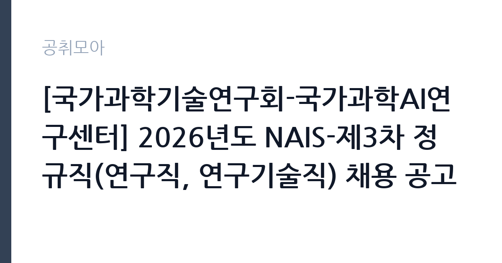

[공공기관] [국가과학기술연구회-국가과학AI연구센터] 2026년도 NAIS-제3차 정규직(연구직, 연구기술직) 채용 공고
국가과학기술연구회 · 세종 · 마감 2026-10-12 (D-19) · 출처 나라일터

한눈에 보는 모집 조건
| 기관 | 국가과학기술연구회 |
|---|---|
| 공고명 | [국가과학기술연구회-국가과학AI연구센터] 2026년도 NAIS-제3차 정규직(연구직, 연구기술직) 채용 공고 |
| 고용형태 | 정규직 |
| 근무지 | 세종 |
| 게시일 | 2026-09-23 |
| 마감일 | 2026-10-12 (D-19) |
지원자격, 이렇게 읽으세요
- 정규직 29명
- 접수 ~2026-10-12 마감
- 세부 조건은 원문 공고문 확인
연구직은 석사 이상 학위를 요구하며 일부 직종은 박사 학위가 필요합니다. 연구기술직은 학력 제한이 없습니다. 선발직급은 책임급과 선임급, 원급으로 나뉘며 분야별로 요구하는 전공과 경력이 다르므로 원문 공고문의 모집분야표를 꼼꼼히 확인하셔야 합니다. 공통 결격사유와 우대사항도 접수 전에 반드시 점검하시기 바랍니다.
이 공고의 포인트
이 공고의 가장 큰 특징은 채용 규모와 분야의 선명함입니다. 단일 공고로 29명을 선발하며, 거대언어모델과 AI 에이전트, GPU 컴퓨팅 운영 등 현재 산업계에서 가장 수요가 높은 직무가 정규직으로 열려 있습니다. 출연연구기관 정규직 특유의 고용 안정성과 국가 전략 과제 참여라는 상징성을 동시에 얻을 수 있습니다. 세종 근무라는 점도 정주 여건을 따지는 분들께 참고 사항이 됩니다.
전형은 어떻게 진행되나
응시는 국가과학기술연구회 채용시스템을 통한 온라인 접수로 진행됩니다. 접수기간은 2026년 9월 23일부터 10월 12일 14시까지이며 마감시각이 오후 2시로 이른 편이니 미리 제출하시는 것이 안전합니다. 이후 서류심사와 면접심사가 이어질 것으로 예상되며 세부 전형 단계와 일정은 원문 공고문에서 확인하시기 바랍니다. 문의처는 042-288-9073입니다.
원문에서 확인한 전형 방식
○ 모집분야 : 연구직(21명) 및 연구기술직(8명), 총 29명 - 연구직: 과학AI-OS 플랫폼 설계, LLM 사후학습, AI 보안, 기관 AI 전환(AX), 도메인 과학 AI 모델링, 과학기술·AI 정책, AI 과학자 에이전트, 자율실험실 등 - 연구기술직: 과학 AI 포털 구현, AI 인프라 보안 관제, GPU·이기종 컴퓨팅 운영, LLM 추론 서빙, 데이터 엔지니어, 업무전산시스템(MIS) 등 ○ 선발직급 : 책임, 선임, 원 등 ○ 고용형태 : 정규직(3개월 시용계약기간 적용) ○ 자격요건 : 연구직 석사 이상 학위(일부 직종 박사 학위), 연구기술직 학력 무관 ○ 접수기간 : 2026년09월23일 ~ 2026년10월12일 14:00까지 ○ 응시방법 : 국가과학기술연구회 채용시스템을 통한 접수(https://nst.fairy.im) ○ 문의처 : 042-288-9073
이런 분께 추천해요
- 인공지능 석사나 박사 학위 소지자로서 거대언어모델과 AI 에이전트 연구 경험을 쌓고 싶은 분께 적합합니다.
- GPU와 이기종 컴퓨팅 운영, 언어모델 추론 서빙 등 AI 인프라 실무 경력이 있는 엔지니어께 추천합니다.
- 과학기술 정책과 AI 전략에 관심 있는 연구자로서 국가 과제 참여를 원하는 분께 어울립니다.
지원 전 체크리스트
- 지원 분야의 학위 요건과 전공을 원문 모집분야표에서 확인했습니다.
- 접수 마감시각이 10월 12일 14시임을 확인하고 미리 제출합니다.
- 채용시스템 회원가입과 증빙서류 업로드 방식을 사전에 점검했습니다.
- 문의처와 세부 일정을 원문에서 확인했습니다.
모집 일정과 제출 타이밍
접수기간은 9월 23일부터 10월 12일까지 약 3주간입니다. 기간이 길어 보이지만 연구실적서와 직무수행계획서 등 준비 서류가 많은 공고이므로 첫 주에 초안을 완성하시는 것을 권합니다. 접수 기간 중 공휴일에는 시스템 문의 응대가 어려울 수 있으니 마감일 접수는 피하시기 바랍니다.
직무 이해하기: 공공기관
국가과학AI연구센터는 과학기술 연구와 인공지능을 융합하는 국가 연구조직으로, 과학AI 플랫폼 구축과 도메인 특화 모델 개발, 자율실험실 같은 첨단 연구를 수행합니다. 연구직은 모델과 알고리즘, 정책 연구를 맡고 연구기술직은 포털 구현과 인프라 보안 관제, 데이터 엔지니어링, 업무전산시스템 운영 등 연구를 뒷받침하는 실무를 담당합니다. 세종 청사 기반의 협업 환경에서 국가 연구개발과 호흡을 맞추게 됩니다.
자기소개서 작성 팁
자기소개서에서는 본인의 연구 실적과 지원 분야의 연결고리를 구체적으로 서술하셔야 합니다. 논문과 프로젝트, 오픈소스 기여 등 검증 가능한 성과를 중심으로 쓰고 지원 기관의 과제 방향과 어떻게 맞닿는지 명시하시기 바랍니다. 막연한 포부보다는 수행 가능한 연구 계획을 제시하는 것이 설득력을 높입니다.
면접 준비 포인트
면접에서는 본인의 핵심 연구 한두 개를 깊이 있게 설명할 수 있어야 합니다. 문제 정의부터 방법론, 결과와 한계까지 5분 안에 정리하는 연습을 권합니다. 연구기술직은 장애 대응과 운영 경험을 사례 중심으로 준비하시고, 정책 분야는 최신 AI 정책 현안에 대한 견해를 정리해 두시기 바랍니다.
급여·근무조건 읽는 법
급여 수준은 직급별로 차등 적용됩니다. 외부 연봉 정보에 따르면 국가과학기술연구회 신입 초봉은 약 4,000만원대 초반에서 4,356만원 수준으로 알려져 있으며 선임급 약 5,428만원, 책임급 약 7,721만원 수준이라는 게시물이 있습니다. 출처는 네이버 블로그와 자소설닷컴, 블라인드 게시물이며 기관 공식 수치가 아닙니다. 정확한 기본급과 수당, 상여, 실수령액은 원문 공고문과 최종합격 후 근로조건 안내에서 확인하시기 바랍니다. 출연연구기관은 성과급과 복리후생이 별도로 적용됩니다.
자주 묻는 질문
- 시용계약기간 3개월은 어떤 의미인가요?
정규직으로 임용되되 최초의 3개월은 수습 성격으로 근무하며 평가를 거친다는 뜻입니다. 세부 평가 기준은 원문 공고문과 근로계약서에서 확인하시기 바랍니다. - 연구직과 연구기술직의 차이는 무엇인가요?
연구직은 모델 개발과 정책 연구 등 연구 수행이 중심이고 연구기술직은 포털 구현과 인프라 운영, 데이터 엔지니어링 등 연구 지원 실무가 중심입니다. 학위 요건도 다르니 모집분야표를 확인하시기 바랍니다. - 근무지는 어디인가요?
국가과학기술연구회 세종 청사 기반 근무가 원칙으로 안내되어 있습니다. 세부 근무 장소는 분야별로 다를 수 있으니 원문에서 확인하시기 바랍니다.
함께 보면 좋은 공고
[공공기관] 발전공기업 통합실무지원단장 채용공고 — 마감 2026-10-08[공공기관] (재)인천광역시부평구문화재단 대표이사 채용 공고 — 마감 2026-10-13[공공기관] [설악산] 설악산국립공원 기간제 직원[환경관리(한시인력)] 채용 공고 — 마감 2026-10-01출처: 나라일터 공개정보를 바탕으로 공취모아가 정리한 안내글입니다. 모집 조건·일정은 변경될 수 있으니 지원 전 반드시 원문 공고문을 확인하세요. 본 글은 정보 제공용이며 합격을 보장하지 않습니다.